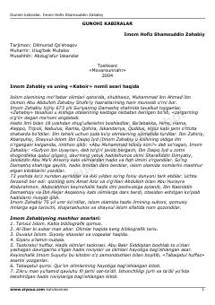

GKIslom dinida katta gunoh hisoblangan amallar va ulardan saqlanish haqidagi diniy qo'llanma.
Ushbu asar islom dinida katta gunoh hisoblangan amallar haqida batafsil ma'lumot beradi. Muallif Qur'on va hadislar asosida gunohi kabiralarni tushuntirib, ulardan saqlanish yo'llarini bayon qiladi.